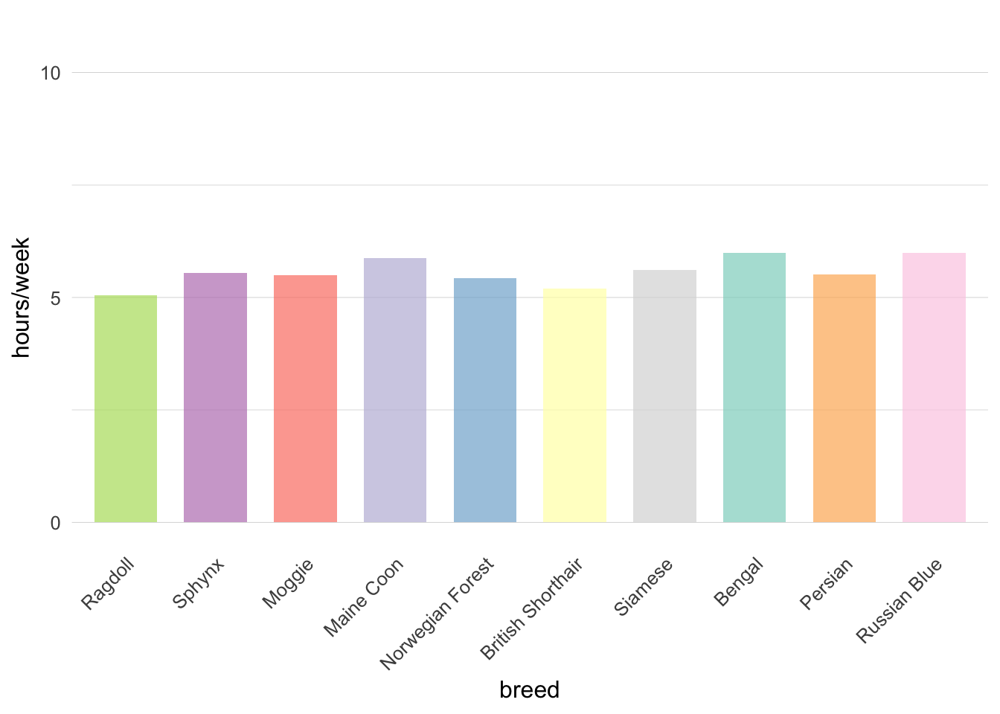
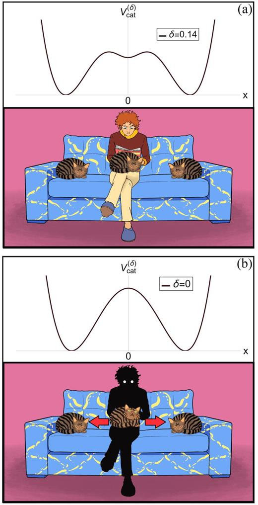
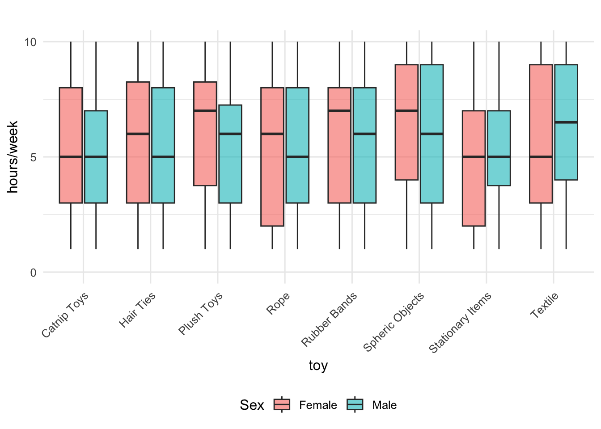

Wanna Play? A study on cats’ fetching behaviors
Introduction
“Fetching” refers to the act of retrieving an object, often thrown by a pet guardian. This activity is a common form of social bonding and play between dog parents and their pets. (Grigg & Kogan, 2019)
Despite cats being often perceived as aloof and independent creatures, have long been overshadowed by their canine counterparts when it comes to interactive play behaviors such as fetching. However, recent research has shed new light on the prevalence and characteristics of fetching behavior in domestic cats (Felis catus), challenging long-held stereotypes and revealing a more complex picture of feline-human interactions (Delgado et al., 2024).
Fetching, a behavior traditionally associated with dogs, has been observed in a significant proportion of cats. A comprehensive study conducted by researchers at Purdue University and the University of Pennsylvania found that 40.9% of cats engage in fetching behavior, a figure much higher than previously thought (Forman et al., 2023a). This discovery not only highlights the diversity of cat behavior but also raises intriguing questions about the origins and functions of this behavior in felines.
The act of fetching in cats appears to be rooted in their innate hunting instincts, serving as a form of play that mimics aspects of predatory behavior4. Unlike dogs, where fetching is often a trained behavior, cats typically initiate fetching spontaneously, with 94.4% of fetching cats offering the behavior without specific training (Delgado et al., 2024). This spontaneity suggests that fetching may serve as a natural form of social engagement between cats and their human companions.
There is limited research exploring why or how cats engage in fetching behavior. One anecdotal description highlights a process where a guardian throws an object for the cat to chase, but the cat waits for the guardian to retrieve it and follows them when called. Eventually, the cat may return the object to the original spot, though this doesn’t always happen, and the activity often loses its appeal, both for the cat and the guardian. Surveys from cat parents have indicated that fetching is more common than other behaviors like coming when called or playing games. In one qualitative study, a guardian mentioned their cat’s “obsession” with fetching, noting that the cat would drop toys on their face during the night. Despite its rarity, fetching has been reported as a play activity in surveys on cat-human interaction. However, it is unclear from existing literature whether cat fetching is a trained behavior or occurs spontaneously. Some suggest that fetching in cats may require training, built on the foundation of instinctual behaviors (Forman et al., 2023b).
Furthermore, the prevalence of fetching behavior in cats varies based on several factors, including age, sex, breed, and living environment. Understanding these variables can provide valuable insights into feline cognition, social behavior, and the evolutionary adaptations that have shaped the domestic cat’s relationship with humans.
This paper aims to explore the current understanding of fetching behavior in domestic cats, examining its prevalence, characteristics, and potential implications for cat-human relationships. By delving into this understudied aspect of feline behavior, we hope to contribute to a more nuanced understanding of cat cognition and social capabilities, ultimately enhancing our appreciation for these complex and often misunderstood companions.
Literature Review
Recent studies have shed new light on the prevalence and characteristics of fetching behavior in domestic cats, challenging long-held stereotypes about feline-human interactions. A comprehensive study published in September 2024 by researchers from Purdue University and the University of Pennsylvania found that 40.9% of cats engage in fetching behavior, a figure much higher than previously thought. This finding is particularly significant when compared to dogs, of which 77.8% were reported to fetch (Delgado et al., 2024).The study, which surveyed 8,224 cat owners and 73,724 dog owners, revealed several factors influencing fetching behavior in cats:
Age and sex: Younger male cats were more likely to fetch.
Living environment: Indoor cats showed a higher propensity for fetching compared to outdoor cats.
Breed: Siamese, Burmese, and Tonkinese cats were most likely to exhibit fetching behavior.
Health: Healthier animals were more inclined to fetch.
Biasi (2024) determined the cat-human interaction from the viewpoint of classical mechanics theories and concepts. Beyond being an enjoyable model to exemplify physics, findings such as can be used to better understand cats fetching habits as well, including his considerations on Newton‚Äôs mechanics in the presence of an external potential, which can be applied as \(V_{cat}^{(ùõø)}\), as illustrated in Figure 1.

Previous research have also suggested a few main themes associated with feline fetching habits. Forman et al. (2023a) presents a concept map (Figure 2) which illustrates the relationship and branching of sub-themes associated with the fetching process itself, the acquisition or retrieval process, and the conditions in which the fetching session happens.

The literature suggests that fetching in cats may be an instinctive behavior rather than a learned one. Furthermore, cats were found to largely determine when they engage in fetching sessions, demonstrating independent agency in the onset and maintenance of this behavior. These findings provide valuable insights into the cognitive and social capabilities of domestic cats, challenging the perception of cats as aloof or independent creatures.This body of research not only expands our understanding of feline behavior but also highlights the complex nature of cat-human interactions, suggesting that cats may be more socially engaged with their guardians than previously believed.
Methods
Study Design
A survey was distributed to 822 cat parents in the region to better understand the frequency, conditions, and factors influencing their cats’ tendency to fetch1. The survey was designed to capture a broad range of data on various aspects of feline fetching behavior, from the cat’s age and breed to the frequency of play and engagement in fetching activities.
The survey was distributed online via social media channels and local community forums, ensuring accessibility for a diverse sample of participants. All respondents were required to be adult cat owners, and there were no restrictions based on the breed or age of the cats owned.
Survey Variables
The survey included a variety of variables related to both the cats’ behavior and the guardians’ experiences. The key variables that were recorded in the survey included:
Cat’s Age: The age of the cat (categorized into young, adult, or senior).
Breed: The breed of the cat, with particular interest in breeds commonly associated with fetching behavior (e.g., Maine Coon, Bengal).
Fetching Frequency: The frequency with which the cat engages in fetching (e.g., never, occasionally, frequently).
Play Duration: The typical duration of playtime for the cat in a single session.
Fetch Motivation: The types of objects used for fetching (e.g., balls, toys, sticks).
Owner’s Interaction: The level of interaction or training by the owner to encourage or discourage fetching behavior.
Cat’s Health and Activity Level: Whether the cat has any health issues and their general activity level (e.g., low, moderate, high).
Environmental Factors: Whether the cat has access to outdoor play or is an indoor-only cat.
Data Collection & Analysis
The survey was administered online over a period of two months. All responses were anonymous, and participants were given an informed consent form outlining the purpose of the survey, the voluntary nature of participation, and confidentiality assurances. Cat parents were asked to answer one survey per cat in their household. The data collected from the survey responses were compiled into a dataset for analysis. The collected data were analyzed using RStudio in order to allow for better transparency and reproducibility.
Ethical Considerations
The study was conducted in accordance with ethical guidelines for research with human participants. Informed consent was obtained from all participants, and the study ensured the anonymity and confidentiality of all responses. Additionally, no personal or sensitive information was requested from the respondents.
Discussion of Findings
Our sample included cats from 822 unique pet parents, indicating an average of 1.9 cats per respondent, with a maximum of 5. Out of a total of 1543 cases, 790 were males (51.2%), while 753 females (48.8%) account for the second-largest group. The average age of the cats included on the dataset was 6.4.
Out of a total of 1543 cases, the largest category is Healthy with 26.4% of the cases. Following that, overweight/obese accounts for 25.2%, while chronic illness and minor illness make up 25.0% and 23.5% respectively.
We also identified little variability across breeds in the average time spent per week playing fetch with their owners, with all breeds being very active in fetching activities with at least 10 hours a week.
We also compared the average time spend between males and females considering their preferred toys.

References
Biasi, A. (2024). On cathuman interaction from the viewpoint of physics: An equation of motion. American Journal of Physics, 92(11), 827–833. https://doi.org/10.1119/5.0158200
Delgado, M. M., Stella, J. L., Croney, C. C., & Serpell, J. A. (2024). Making fetch happen: Prevalence and characteristics of fetching behavior in owned domestic cats (Felis catus) and dogs (Canis familiaris). PLOS ONE, 19(9), e0309068. https://doi.org/10.1371/journal.pone.0309068
Forman, J., Renner, E., & Leavens, D. A. (2023a). Fetching felines: a survey of cat owners on the diversity of cat (Felis catus) fetching behaviour. Scientific Reports, 13(1). https://doi.org/10.1038/s41598-023-47409-w
Forman, J., Renner, E., & Leavens, D. A. (2023b). Fetching felines: a survey of cat owners on the diversity of cat (Felis catus) fetching behaviour. Scientific Reports, 13(1). https://doi.org/10.1038/s41598-023-47409-w
Grigg, E. K., & Kogan, L. R. (2019). Owners’ Attitudes, Knowledge, and Care Practices: Exploring the Implications for Domestic Cat Behavior and Welfare in the Home. Animals, 9(11), 978. https://doi.org/10.3390/ani9110978
Footnotes
This paper is a fictional work created solely for instructional purposes and is not based on actual research. While it may reference ongoing research in the field, all content within this document, including the underlying dataset, is fabricated and based on synthetic data. The primary objective of this paper is to demonstrate how RStudio and Quarto can be used effectively to streamline and enhance reproducible scientific writing. This paper is intended as a learning tool for understanding the integration of these platforms in the context of research workflows. Please do not use or cite this paper.↩︎